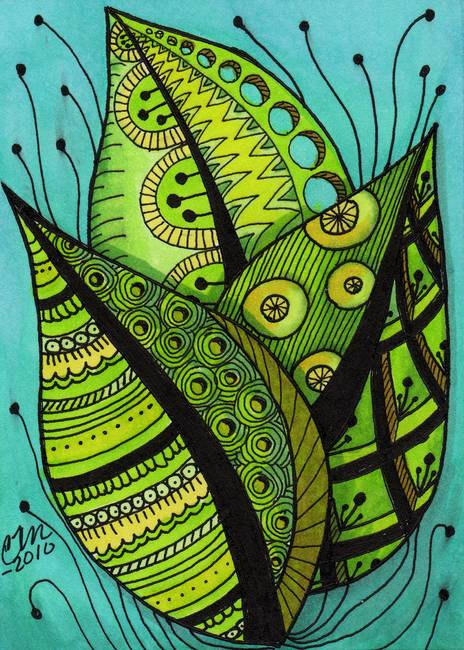
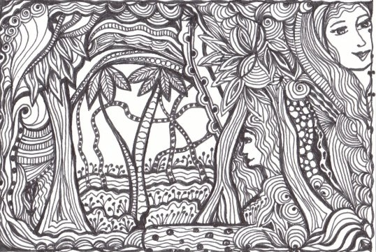

Blogtanglous
Leaves in Art
Posted 9:49 am / June 18th, 2015
 A few days ago, I found these gorgeous patterns while I was searching for some inspiration for a forest inspired zentangle piece. I could definitely use these for so many other projects that I have in mind.
 Tweet
Tweet